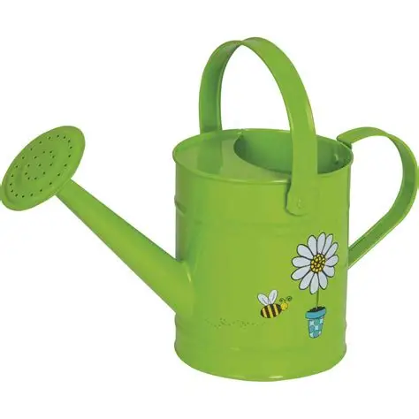

花卉百科
首页
花卉分类
养护指南
关于我们
个人中心
浇水壶使用指南

浇水壶的选择与使用
壶嘴设计：
选择带长壶嘴的浇水壶，可以精准控制水流方向
容量选择：
室内小盆栽选择1-2升容量，室外大植物选择5升以上
材质：
塑料材质轻便耐用，金属材质更美观但较重
喷头选择：
可调节喷头适合不同浇水需求，细雾状适合叶面喷水
清洁保养：
定期清洗防止细菌滋生，存放时保持干燥
使用技巧
沿盆边缓慢浇水，避免直接冲刷植株根部
早晨或傍晚浇水，避免中午高温时段
浇水要透，直到盆底有水流出为止
多肉植物等耐旱品种要减少浇水频率
使用室温水，避免冷水刺激植物根系
相关推荐
✂️
园艺剪刀
专业修剪工具，保持植物健康生长
查看使用指南 →
🌡️
土壤湿度计
精准测量土壤湿度，科学浇水
查看使用指南 →